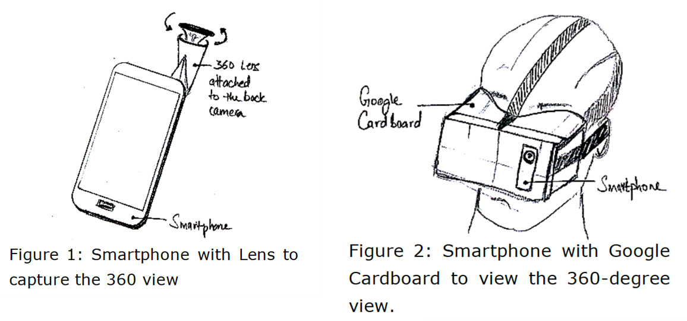
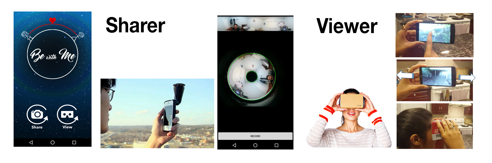

CHALLENGE
Couples stay connected with on a regular basis throughout the day by relying heavily on communication technologies. It’s essential for distance separated couples to support and maintain their relationship with a sense of connectedness, feel each other’s presence. These couples tend to rely heavily on technology to stay connected and use technologies such as video communications. They support face-to-face conversation to share their facial expressions, gestures, and voice.
However, the challenge with these systems is that their design tends to suggest and support conversations as the sole use of the system when, in reality, couples may wish to do far more over a video connection. They may want to participate in activities together, feel each other's presence and share their experience with each other.
Research Questions:
RQ1: How can we provide the user with a greater understanding of remote context?
RQ2: How can we provide the user with an independent control of the remote view?
PROCESS
Design Requirements
This project addresses the design of an immersive video communication system for a greater sense fo presence and immersion into the remote user's environment. I gathered my design requirements from the related work done in this field and from the needs and desires of couples in long-distance relationships.
- Mobility: I wanted our prototype to be able to be used by couples on the go, anywhere, and at any time of the day using the power of the technology already present in their pockets. This system would integrate with a smartphone which ensures it could be used at anyplace and anytime.
- First Person Omnidirectional Video: I selected GoPano micro lens which easily fits a smartphone camera to provide the entire 360-degree horizontal field of view. This will provide us with a complete panoramic image of the remote view.
- Effective Interaction: 360-degree video possess a spatial degree of freedom for navigation; users can navigate through different spaces at different times. I plan to support the spatial navigation of video through two navigation mechanisms. Firstly, with perspective orientation control through the rotation of the smartphone. The user would move his smartphone (rotate, pan) in his own space to navigate the remote 360-degree video. Secondly, using light weight HMDs the spatial navigation would be mapped to head movement (rotation, pan) instead of the smartphone’s movement.
- Independent Navigation: Think of 360 videos as a
combination of multiple frames of video merged together in
a cylindrical shape. The portion of the video in the direction
of the viewer is dynamically extracted and presented to the
user based on his/her response smartphone/head movement.
This would provide the viewer with an independent navigation of the remote context at any point in time.
Design

The goal is to immerse distant partners into each other’s remote location so they can feel a greater sense of presence and a better understanding of each other’s physical environment. We plan to support this goal by using a Smartphone and transforming it to a head mounted display with the help of an inexpensive mount like Google Cardboard along with affordable hardware to capture the 360-degree view using their Smartphone.
The partner sharing his/her view would simply attach a 360-degree lens to their Smartphone to share their environment as shown in Figure 1. The partner viewing the remote context will see the 360-degree rendered view on a mobile screen. This partner would be able to move and pan in the remote context with the help of gyroscopic sensor (measures rotational motion and orientation changes of a device). This will allow the viewer to understand and explore their remote partner’s view with an independent perspective. This view can be converted to a stereoscopic view using the Google Cardboard mount as shown in Figure 2. This mount transforms the mobile screen into a stereoscopic view.
This will provide the user with a more immersive effect, as they would now pan and move their head to render the remote partner’s view. It would give them the feeling of actually looking around in their own physical space to explore the remote context.
OUTCOME
Application
I used a GoPano lens to capture the omnidirectional (doughnut) image. To extract the panoramic image from this omnidirectional image I am using OpenCV first to find the circles as shown below and then converting this omnidirectional mesh into a panoramic mesh, as shown on the right.
To do this, I understood where the center of the doughnut was, what the radius of its hole was, and what the radius of the doughnut itself was. With this information meant I’d be able to map all the points in the image and then translate them to a rectangle instead of a torus. Some basic geometry was required to perform this warping. Next, I used RTMP protocol to send this image over to the other end and retrieve this images using HLS. There was a latency of around 10 seconds in this transmission and the picture quality was not sharp.

Next I used RTMP protocol to send this image over to the other end and retrieve this images using HLS. There was a latency of around 10 seconds in this transmission and the picture quality was not sharp.
What's Next?
I plan to migrate from RTMP and HLS to WebRTC which is more robust
and forms a peer to peer connection without much latency.
Another improvement would be to use a smartphone with
higher resolution camera to improve the picture quality of
the omnidirectional video. I will also incorporate gaze
information which will let the users know where exactly
each of them is looking at, which will help them to easily
synchronize their communication. Finally, after the
improvements, I would like to run a study with long
distance couples to evaluate this design with long distance couples via field study.